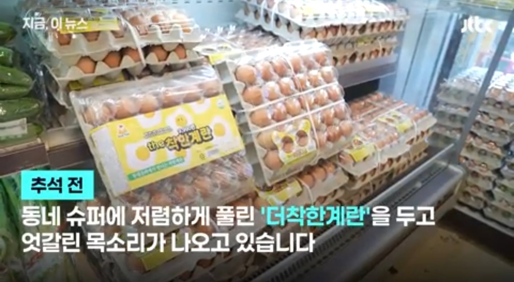
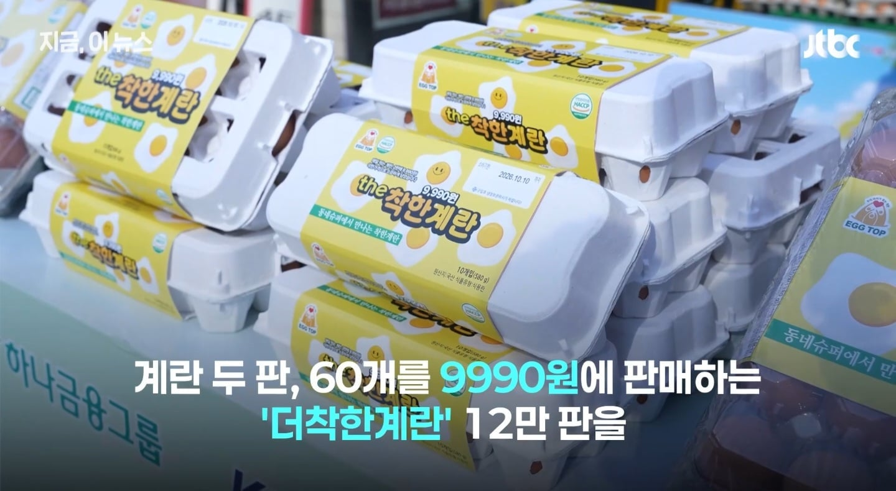
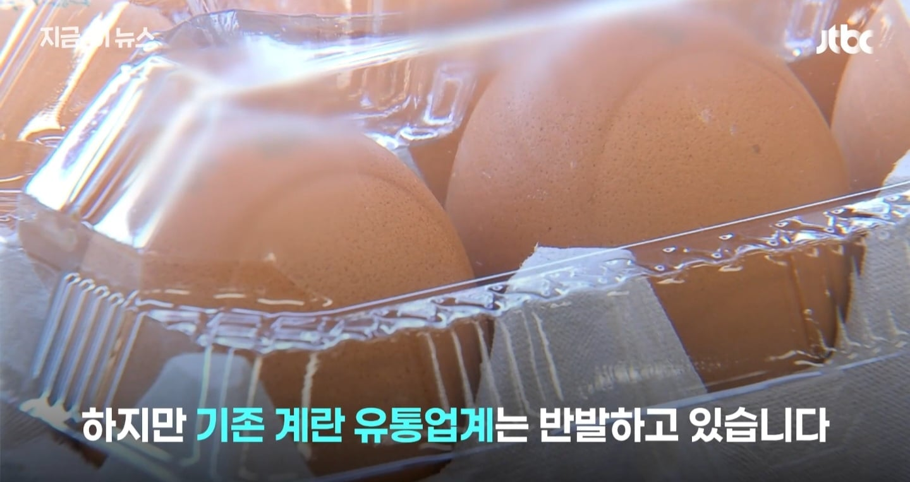
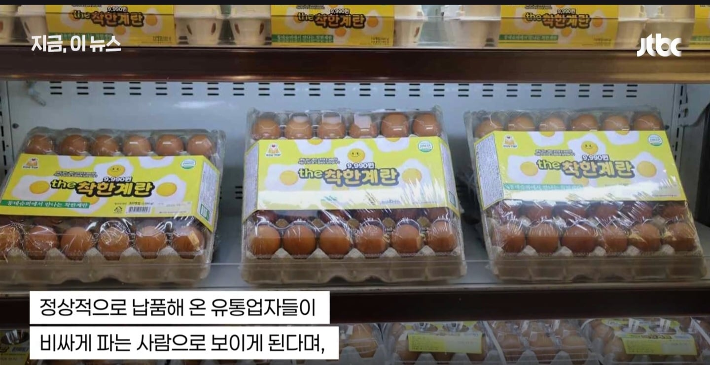
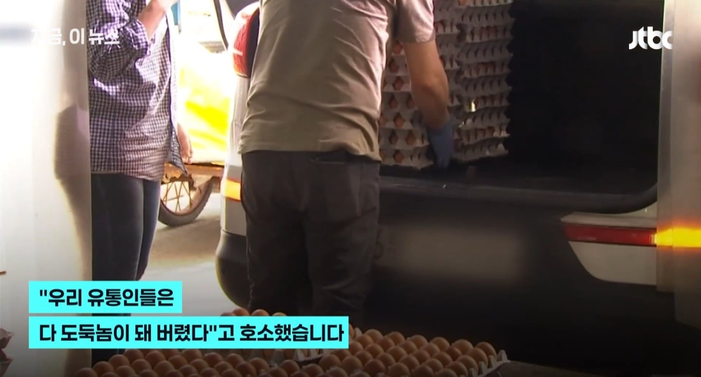
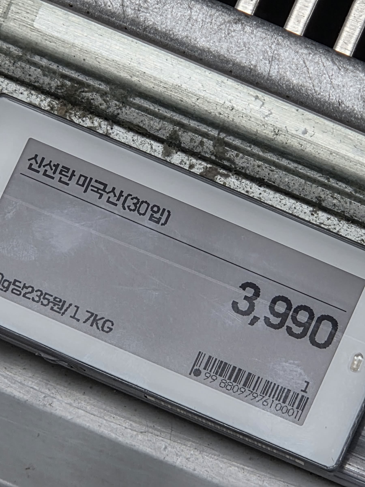
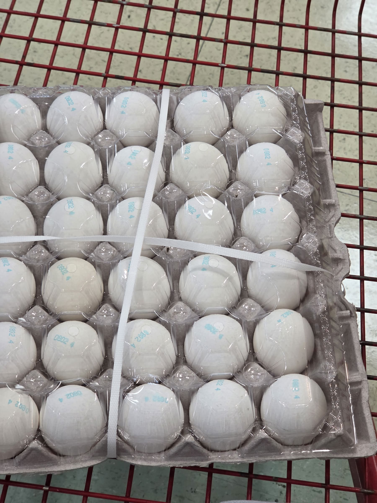

물가안정 + 유통 호소인들 아닥하게 해야함.







물가안정 + 유통 호소인들 아닥하게 해야함.
경험상 롯데마트, 이마트
코스트코에서 샀음
주유소는 맨날 쳐맞아 ㅋㅋ
계란값 가지고 그만들 싸워도 되는게 조류독감 때문에 가격 변동이 워낙 심해서 국내산이 쌀지 수입산이 쌀지는 그때그때 달라. 불과 1년전만 해도 미국에 조류독감이 심하게 퍼져서 1인당 6알씩 구매 제한 걸고 한국에서 긴급 수입할 정도였는데, 지금은 그때 급하게 늘린 산란계들 때문에 오히려 가격이 폭락해서 한국에 싸게 수출 가능한거야.
한국은 한번오르고안떨구잔아
바다건너왔는데 더 싸면 문제가 확실히 있는거지ㅋㅋ
계란 유통업체때문에 비싼거 맞잖아 ㅋ
와 ㅅㅂ 미국란 어디서 사냐